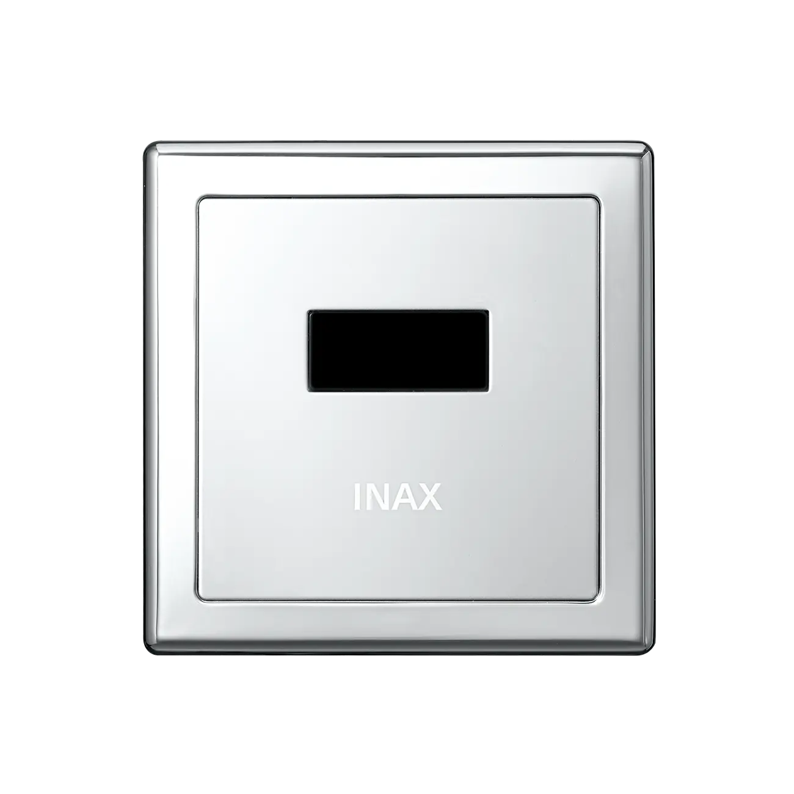
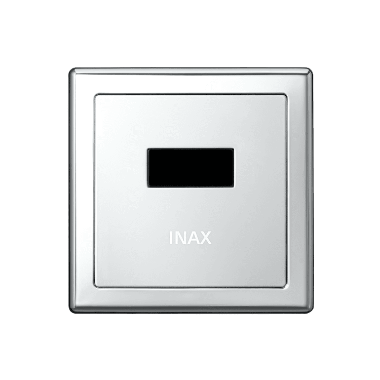
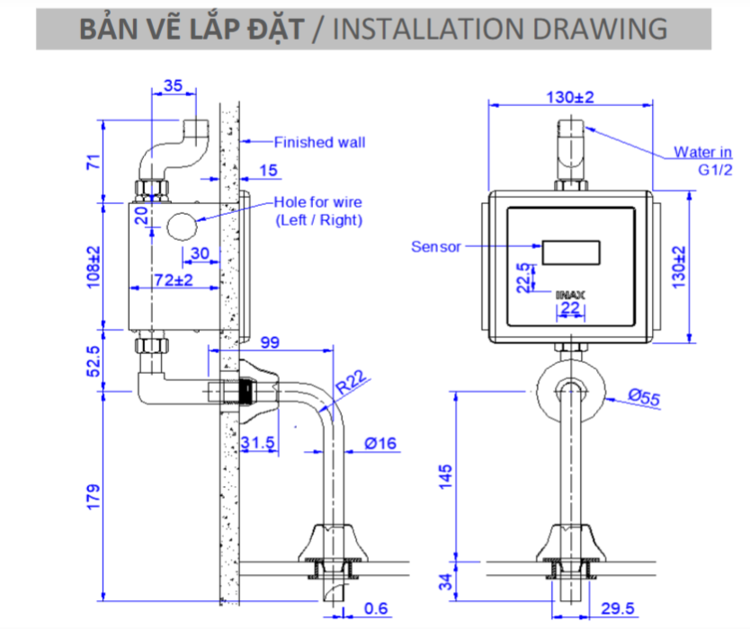
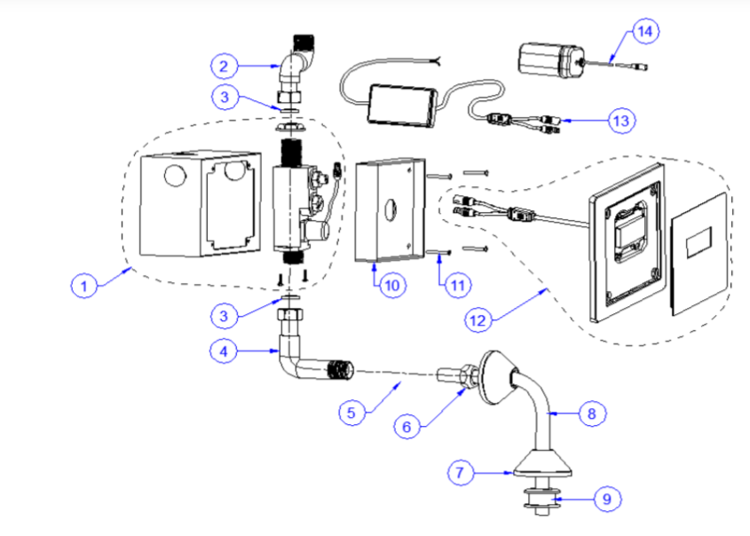

Van xả bồn tiểu tự động INAX OKUV-30SM là giải pháp hiện đại giúp tối ưu trải nghiệm vệ sinh công cộng và gia đình. Sản phẩm được trang bị cảm biến tự động, vận hành bằng nguồn điện xoay chiều/một chiều, đảm bảo xả nước chính xác và tiết kiệm. OKUV-30SM được làm từ chất liệu inox 304 cao cấp, thiết kế gọn gàng, sang trọng, giúp không gian nhà vệ sinh thêm hiện đại, thẩm mỹ.Thiết kế van xả bồn tiểu OKUV-30SMBề mặt làm từ inox 304 sáng bóng, chống gỉ sét, chống ăn mòn, đảm bảo độ bền lâu dài và dễ vệ sinh.Kiểu dáng gọn gàng, thiết kế tối giản, nhỏ gọn, giúp tiết kiệm diện tích và phù hợp nhiều loại bồn tiểu.Bề mặt kim loại sáng kết hợp với đường nét vuông vức tạo cảm giác sang trọng, dễ dàng đồng bộ với các thiết bị vệ sinh cao cấp.Các góc cạnh bo tròn mềm mại, hoàn thiện tỉ mỉ từng chi tiết, tránh sắc nhọn, đảm bảo an toàn trong quá trình sử dụng.Tính năng nổi bật của van xả bồn tiểu OKUV-30SMCảm biến tự động thông minh: Phát hiện người dùng và xả nước chính xác, giúp giữ vệ sinh tối ưu mà không cần thao tác tay.Tiết kiệm nước hiệu quả: Bộ điều khiển thông minh tính toán lượng nước xả dựa trên cường độ sử dụng, tránh lãng phí nước.Tự động xả dự phòng: Sau 24 giờ không có người sử dụng, hệ thống vẫn tự động xả để ngăn ngừa mùi hôi và giữ bồn tiểu nam luôn sạch sẽ.Tùy chỉnh linh hoạt: Khoảng cách cảm biến và thời gian xả có thể điều chỉnh theo nhu cầu thực tế, phù hợp nhiều môi trường sử dụng.Vận hành đa nguồn điện: Hoạt động ổn định với cả nguồn điện xoay chiều và một chiều, đảm bảo tính linh hoạt khi lắp đặt.An toàn, bền bỉ: Hệ thống kín, chống rò rỉ kết hợp với chất liệu inox 304, giúp duy trì tuổi thọ cao ngay cả trong môi trường công cộng.Bản vẽ van xả bồn tiểu OKUV-30SMXem chi tiết bản vẽ lắp đặt tại đây.Thông số kỹ thuậtChất liệuInox 304Kiểu dángThiết kế hiện đại, sang trọng, phù hợp với nhiều không gian vệ sinhKích thước189.5 x 142 x 410.5 mmTính năng- Van xả tiểu tự động dùng nguồn điện xoay chiều hoặc một chiều - Tiết kiệm nước nhờ bộ điều khiển tính toán lượng xả theo cường độ sử dụng - Tự động xả nước sau 24h nếu không có người sử dụng - Khoảng cách sensor và thời gian xả có thể điều chỉnh linh hoạt - Áp lực nước: 0.07 - 0.75MpaThương hiệuINAXThiết kế- Bề mặt inox sáng bóng, dễ dàng vệ sinh - Kiểu dáng gọn gàng, hiện đại, phù hợp với nhiều kiểu bồn tiểuCông nghệCảm biến tự động hiện đại, tiết kiệm nước, chống rò rỉ và tăng độ bền thiết bịMàu sắcInox xám bạc sáng bóngKhác- Phù hợp với các hệ thống bồn tiểu công cộng hoặc gia đình, dễ lắp đặt và kết hợp với các thiết bị vệ sinh INAX khác. - Hotline tư vấn: 18006633Xem thêm video giới thiệu về lịch sử INAX
Van xả bồn tiểu OKUV-30SM
Phụ kiện thương hiệu INAX.
Đã cập nhật danh sách yêu thích.
DANH MỤC: Phụ kiện
MÃ SẢN PHẨM: OKUV-30SM
DEPTH: 189.5mm
HEIGHT: 410,5mm
WIDTH: 142mm
Van xả bồn tiểu tự động INAX OKUV-30SM là giải pháp hiện đại giúp tối ưu trải nghiệm vệ sinh công cộng và gia đình. Sản phẩm được trang bị cảm biến tự động, vận hành bằng nguồn điện xoay chiều/một chiều, đảm bảo xả nước chính xác và tiết kiệm. OKUV-30SM được làm từ chất liệu inox 304 cao cấp, thiết kế gọn gàng, sang trọng, giúp không gian nhà vệ sinh thêm hiện đại, thẩm mỹ.Thiết kế van xả bồn tiểu OKUV-30SMBề mặt làm từ inox 304 sáng bóng, chống gỉ sét, chống ăn mòn, đảm bảo độ bền lâu dài và dễ vệ sinh.Kiểu dáng gọn gàng, thiết kế tối giản, nhỏ gọn, giúp tiết kiệm diện tích và phù hợp nhiều loại bồn tiểu.Bề mặt kim loại sáng kết hợp với đường nét vuông vức tạo cảm giác sang trọng, dễ dàng đồng bộ với các thiết bị vệ sinh cao cấp.Các góc cạnh bo tròn mềm mại, hoàn thiện tỉ mỉ từng chi tiết, tránh sắc nhọn, đảm bảo an toàn trong quá trình sử dụng.Tính năng nổi bật của van xả bồn tiểu OKUV-30SMCảm biến tự động thông minh: Phát hiện người dùng và xả nước chính xác, giúp giữ vệ sinh tối ưu mà không cần thao tác tay.Tiết kiệm nước hiệu quả: Bộ điều khiển thông minh tính toán lượng nước xả dựa trên cường độ sử dụng, tránh lãng phí nước.Tự động xả dự phòng: Sau 24 giờ không có người sử dụng, hệ thống vẫn tự động xả để ngăn ngừa mùi hôi và giữ bồn tiểu nam luôn sạch sẽ.Tùy chỉnh linh hoạt: Khoảng cách cảm biến và thời gian xả có thể điều chỉnh theo nhu cầu thực tế, phù hợp nhiều môi trường sử dụng.Vận hành đa nguồn điện: Hoạt động ổn định với cả nguồn điện xoay chiều và một chiều, đảm bảo tính linh hoạt khi lắp đặt.An toàn, bền bỉ: Hệ thống kín, chống rò rỉ kết hợp với chất liệu inox 304, giúp duy trì tuổi thọ cao ngay cả trong môi trường công cộng.Bản vẽ van xả bồn tiểu OKUV-30SMXem chi tiết bản vẽ lắp đặt tại đây.Thông số kỹ thuậtChất liệuInox 304Kiểu dángThiết kế hiện đại, sang trọng, phù hợp với nhiều không gian vệ sinhKích thước189.5 x 142 x 410.5 mmTính năng- Van xả tiểu tự động dùng nguồn điện xoay chiều hoặc một chiều - Tiết kiệm nước nhờ bộ điều khiển tính toán lượng xả theo cường độ sử dụng - Tự động xả nước sau 24h nếu không có người sử dụng - Khoảng cách sensor và thời gian xả có thể điều chỉnh linh hoạt - Áp lực nước: 0.07 - 0.75MpaThương hiệuINAXThiết kế- Bề mặt inox sáng bóng, dễ dàng vệ sinh - Kiểu dáng gọn gàng, hiện đại, phù hợp với nhiều kiểu bồn tiểuCông nghệCảm biến tự động hiện đại, tiết kiệm nước, chống rò rỉ và tăng độ bền thiết bịMàu sắcInox xám bạc sáng bóngKhác- Phù hợp với các hệ thống bồn tiểu công cộng hoặc gia đình, dễ lắp đặt và kết hợp với các thiết bị vệ sinh INAX khác. - Hotline tư vấn: 18006633Xem thêm video giới thiệu về lịch sử INAX
DANH MỤC: Phụ kiện
MÃ SẢN PHẨM: OKUV-30SM
DEPTH: 189.5mm
HEIGHT: 410,5mm
WIDTH: 142mm